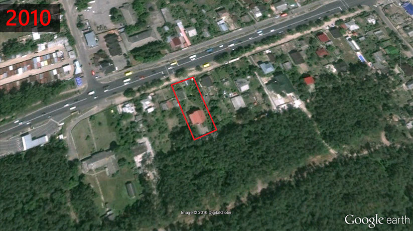

Суддя апеляційного суду Київської обл. Авраменко Микола Григорович. Розслідування «PROSUD».
14 липня 2016р.
Знайомтеся - суддя апеляційного суду Київської області Авраменко Микола Григорович. Це скріншот з відео програми "Схеми", яке було записане 20 квітня 2016р. під час первинного кваліфікаційного оцінювання суддів апеляційного суду Київської області.
За результатами оцінювання в той день восьми суддів, колегія Комісії вирішила, що шестеро суддів здатні здійснювати правосуддя у відповідному суді, серед них і... Авраменко Микола Григорович :)
Але ми маємо величезні сумніви в тому, чи дійсно пан Авраменко здатний здійснювати правосуддя, враховуючи ту інформацію, яку отримали з його офіційної декларації.
До речі, цей той самий суддя Авраменко, який у січні 2015р. ухвалив рішення визнати невинним ірпінського забудовника, який "неумисно" (на думку судді) в червні 2013р. напав на журналістів каналу СТБ.
Отже, Микола Григорович у своїй декларації за 2014р. вказав суму сукупного доходу за рік у розмірі майже 2 млн.грн.(!)
Звідки ж такі мільйонні доходи у судді? - запитаєте ви, якщо його заробітна плата за рік склала лише 254тис.грн.? Насправді все просто. Хоча це з якої сторони подивитися.
Просто суддя апеляційного суду Київської області Авраменко Микола Григорович у 2014р. отримав 1млн.711тис.грн. за рішенням Європейського суду з прав людини(!) НА ПРИДБАННЯ КВАРТИРИ (!!!) О_о Ось це рішення Печерського районного суду м.Києва від 2 квітня 2008р. ЄСПЛ зобов'язав виконати державу Україна за рахунок бюджетних коштів.
Ось цитата з того рішення Печерського суду:
"Свої вимоги позивачі (окрім Авраменка тоді ще 17 суддів отримали кошти на придбання квартир на загальну суму 31млн.грн. - авт.) мотивували тим, що вони працюють суддями Апеляційного суду Київської області на протязі тривалого часу (від 1 до 7 років), а тому відповідно до вимог ст. 44 Закону України «Про статус суддів» повинні бути забезпеченні на протязі 6 місяців з моменту призначення на посаду благоустроєним житловим приміщенням по місця знаходження суду. Однак відповідачі по справі свої обов'язки по забезпеченню позивачів благоустроєним житлом не виконують на протязі тривалого часу чим порушують їх права на належні житлові умови проживання, в зв'язку з чим вони, будучи мешканцями інших міст Київської області вимушені витрачати значний час на приїзд до роботи та нести додаткові витрати на оренду житлових приміщень в м. Києві."
А так, як апеляційний суд Київської області знаходиться в Шевченківському районі Києва, то і вартість квартир для суддів розраховували в цінах Шевченківського району, який, до речі, завжди був одним з найдорожчих за цінами на житло (дорожчий тільки Печерський район).
В результаті суд ухвалив, що Авраменко має отримати трикімнатну квартиру вартістю 338 874 у.о. (за курсом 100 доларів США = 505 грн.) або 1 711 313 грн. 70 коп. Стягнути дану суму коштів мають з Державного казначейства України.
Цікаво, як часто українські громадяни отримують від держави Україна за рішенням судів десятки, а то і сотні тисяч доларів на придбання квартири??? От пощастило пану Авраменко, так пощастило і, здається, не лише з квартирою. Але про це трохи згодом.
З 2006р. Микола Григорович вже мав квартиру в Броварах (зараз ціна подібної квартири стартує від 30тис.$), точніше його дружина Авраменко Наталія Анатоліївна, яка отримує чималі доходи від провадження незалежної професійної діяльності. А в 2010р. пані Авраменко придбала ще одну квартиру більшою площею (на сьогодні її ціна складає близько 40тис.$) майже по сусідству з першою.

Дані квартири зазначені в декларації за 2014р..
Також у 2014р. Наталія Анатоліївна задекларувала майже 1млн.грн. доходів, у 2015р. - 1,25млн.грн.
Працює приватним нотаріусом.


То невже родина Авраменків аж так потребувала тих 1,7млн.грн. на придбання собі чергової квартири, маючи вже такі доходи?
Але далі стає ще цікавіше.
Також в декларації зазначено, що дружина пана Авраменка має чи орендує три земельні ділянки, дві з яких площею по 7 соток і одна - 4 сотки.
Ми ж вирішили уточнити цей момент і ось яку інформацію отримали стосовно даних земельних ділянок. Знаходяться вони поряд одна з одною, також у Броварах.

2 - 3
<
>
А ось що саме знаходиться на території цих трьох земельних ділянок :)))
Один великий житловий будинок загальною площею мінімум 450м² з підземним паркінгом та будинок поменше, квадратів на 150.
1 - 4
<
>
На нашому відео про життя суддів київських апеляційних судів він у другій частині.
На подвір'ї нами також був помічений автомобіль ТOYOTA Sequoia.
Мабуть знову "випадковість"? Інакше як пояснити, що такий же автомобіль ТOYOTA Sequoia зазначений і в декларації судді Авраменка Миколи Григоровича як транспортний засіб, що перебуває у власності чи в оренді дружини? :)


Тобто виходить, що пан Авраменко не вказав у своїх деклараціях за 2014 та 2015рр. даний житловий будинок? Чергова "помилка" в декларуванні українським суддею свого майна? Чи просто ухилення від сплати податків?
Наше припущення, що даний будинок просто зазначений як "незавершене будівництво" у графі "житлові будинки" серед задекларованого майна дружини Наталії Авраменко в декларації за 2014р. та "будинок не зданий в експлуатацыю" в декларації за 2015р.
А як відомо, не введена в експлуатацію нерухомість не оподатковується :)
Але ж це очевидно, що в даному будинку вже живуть люди і не перший рік. Зі знімків Google Earth можно зрозуміти, що ще з 2002 по 2005 рр. ще велося якесь будівництво на подвір'ї, але фото з супутника станом на 2008р. практично ідентичне знімку 2015р. Тобто будівельні роботи були завершені максимум у 2008р., а то й раніше, тобто мінімум 8 років тому.

2 - 5
<
>
Чому з того часу даний будинок все ще зазначений як "не зданий в експлуатацію"?
Здається відповідь очевидна :)
Нагадуємо, що в тому ж таки 2008р. суддя Авраменко судився з Державним казначейством України, Київською обласною адміністрацією та Державною судовою адміністрацією України щодо поліпшення своїх житлових умов і суд все ж таки виграв, отримавши 1,7млн.грн. на придбання квартири в Києві.
Враховуючи зазначене вище, ми, м'яко кажучи, здивовані рішенням членів Вищої кваліфікаційної комісії суддів України, що суддя апеляційного суду Київської області Авраменко Микола Григорович "здатний", на їхню думку, здійснювати правосуддя і без застережень пройшов первинне кваліфікаційне оцінювання у квітні цього року.
Дана інформація буде нами офіційно передана до Національного антикорупційного бюро України, Національного агентства з питань запобігання корупції, Вищої кваліфікаційної комісії суддів України та Вищої ради юстиції. PROSUD
Copyright © 2016 PROSUD